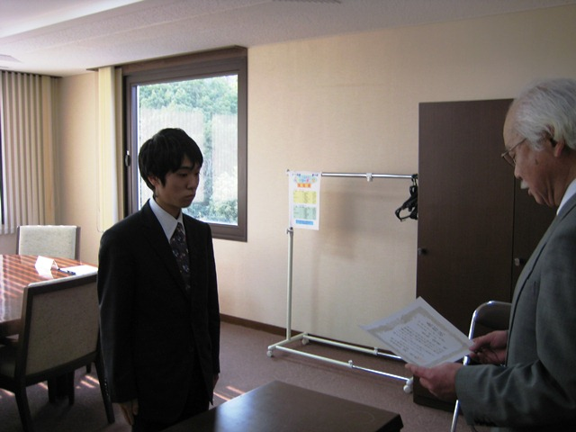

|
表彰式の様子
|
|

|
2010年度のベストリーダー賞表彰式を、平成23年2月4日（金）15:00〜、岡山理科大学11号館８階会議室にて開催しました。
当日は、欠席者7名を除く受賞者9名が参加し、関達也図書館長より、表彰状と副賞の図書カードが授与されました。
今回は、大賞の1位を生和君が、2位を福岡さんが3部門制覇しました。
また、福岡さんと真子さんは、3年前新人賞の獲得者でした。
|
表彰式後、ベストリーダー賞受賞者と、図書館職員との懇談会を行い、受賞の感想や図書館への要望などが談義されました。
|
|
| 大賞受賞者の感想 |
|
理工系1位
人文・社会科学1位
文学1位
生和 陽康
Q 受賞してのご感想は？
A うれしいです。
Q 受賞の秘訣は？
A 図書館にいくこと。
|
理工系2位
人文・社会科学2位
文学2位
福岡 祥子
Q 受賞してのご感想は？
A それほどたくさん読んでいるとは思っていなかったので、結果を聞いてびっくりしました。荷物が少なかったら、きっともっと借りて読んでいたと思います。
Q 受賞の秘訣は？
A 図書館に行って、好きな本を探すことだと思います。
私は新書コーナーに有る本を手に取っていました。
|
| 大賞受賞者の推薦本 |
|---|
| 署名 / 著者 [請求記号] | 推薦の理由 |
|---|
| 経済は感情で動く / マッテオ・モッテルリーニ著 [331/Mo] 21号館 |
人の行動をわかりやすく説明しています。
経済を身近に感じることができます。 |
| 三国志 / 北方謙三 [908/Ka/K] 10号館2F文庫 |
これを読んで私は歴史が好きになりました。 |
| ゴロ・ポーチ : 苦手な暗記対策もばっちりのゴロ本 / 山越麻生 [4492.9/Go] 11号館2F |
絵もついており、素直に覚えやすいです。臨床検査技師に必要な知識のゴロも入っています。 |
| 文学少女シリーズ / 野村美月 [908/En/N] 10号館2F文庫 |
ラノベなのですが、本大好きな少女が本の説明をしてくれるので、その中の本まで読みたくなります。もちろん本としても読みやすいです。 |
| CD付き英語のテキスト（タイトル不明） / [830.79/Ed] 21号館特設コーナー |
英語の勉強にも時事的な勉強にも役立った。 |
| 新人賞受賞者の感想 |
|
理工系1位
出納 誠
Q 受賞してのご感想は？
A 今回、受賞ということを聞いて大変うれしく思います。今後も様々な分野の本を読んでいき、図書館をより有効活用していきたいと思います。
Q 受賞の秘訣は？
A 特にありませんが、ただ自分が学びたいと思った本を読み進めていくだけです。
|
人文・社会科学1位
文学2位
佐藤 嘉海
Q 受賞してのご感想は？
A うれしいです。
Q 受賞の秘訣は？
A 長期の休みを利用して、たくさんの本を読むことです。
|
|
文学1位
山本 一貴
Q 受賞してのご感想は？
A 受賞があることを知らなかったので、嬉しいです。
Q 受賞の秘訣は？
A 読みたい本を読むこと。
|
|